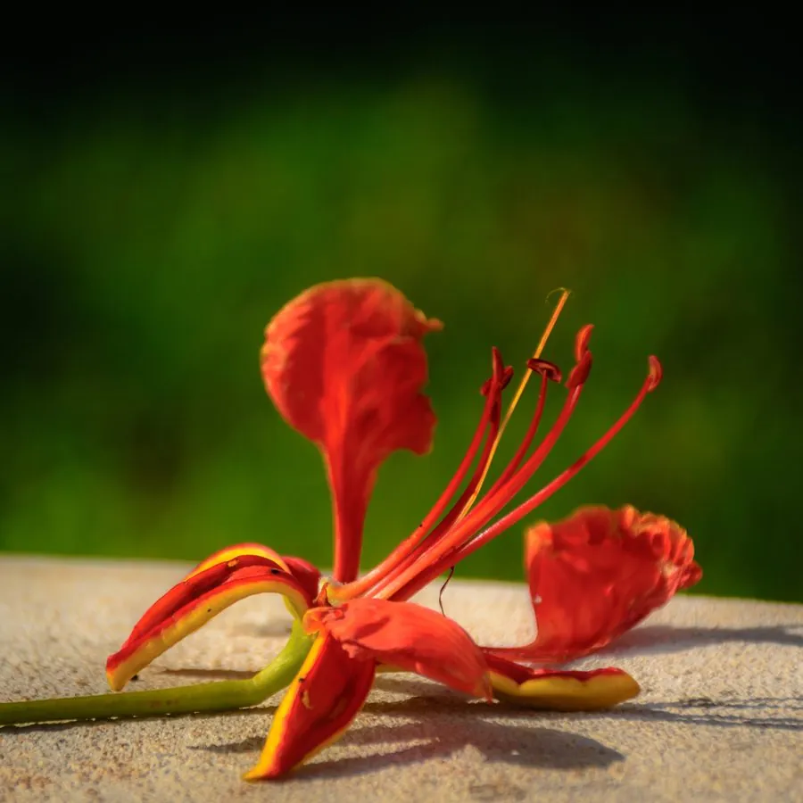

乔木 · 植物界
凤凰木 Delonix regia

热带地区著名的观花乔木，夏季开花时满树火红如凤凰展翅，是华南城市常见的行道树与庭园观赏树种。
- 分类
- 门被子植物门纲木兰纲目豆目科豆科属凤凰木属
- 栖息环境
- 热带与亚热带地区的平原、庭院与行道旁，喜高温多雨，不耐寒
- 地理分布
- 原产非洲马达加斯加，中国广东、福建、云南、海南等地广泛栽培
- 保护级别
- 暂无评估；中国未列入国家重点保护野生植物名录
物种志
凤凰木为落叶乔木，高可达 20 m，树冠开展呈伞形；树皮灰褐色而粗糙；叶片为二回羽状复叶，长可达 60 cm，小叶密集、细小，羽片 15–20 对。花期 5–7 月，总状花序顶生或腋生，花瓣 5 枚、鲜红色并带黄色条纹，盛开时满树如火，故有“火树”之称。荚果木质、扁平，长可达 60 cm，成熟时黑褐色，内含 40–50 粒种子。
凤凰木原产非洲马达加斯加，喜高温多雨、光照充足的热带气候，不耐寒，适宜深厚肥沃、排水良好的土壤。它是热带与亚热带地区著名的观花树种，被广泛种植于行道、公园与校园，厦门、高雄等城市将其选为市花或市树；花期恰逢毕业季，因此在南方校园中被称为“毕业花”。木材轻软，可制小器具；树皮可提取鞣料；花与种子有毒，不可食用。
形态与习性
- 株高可达 20 m，树冠呈伞形
- 花期5–7 月，花鲜红色
- 果期10–12 月，荚果木质扁平
- 光照喜光，不耐荫
- 水分喜湿润，耐短期干旱
- 土壤深厚肥沃、排水良好的壤土
- 主要用途观花行道树、庭园树、树皮提取鞣料
趣味知识
- 凤凰木开花时满树鲜红，远看像凤凰展翅，因此得名。
- 凤凰木的花期恰逢毕业季，因此在华南校园里被称为“毕业花”。
- 凤凰木的荚果可长达 60 cm，内含 40–50 粒种子，成熟后呈黑褐色。
- 凤凰木的花与种子含有毒成分，不可食用，观赏时也应避免误食。